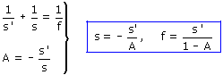
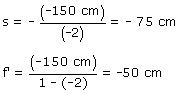

Si la imagen es invertida y de tamaño doble A= -2 Una imagen invertida es real, tendrá que estar delante del espejo, luego s' = -150 cm Datos: s' = -150 cm, A= -2 Incógnitas: s, f   Si el foco está 50 cm a la izquierda del vértice del espejo, el centro estárá 100 cm a la izquierda. El radio del espejo (Distancia) vale 100 cm Como s = -75 cm el objeto está colocado entre centro y foco. Construcción gráfica |